Why Hybrid AI need GPU reservations (GPU scarsity in EU and ilusion of soverein AI)
Running private AI is far from free - it shifts the invoice from a cloud vendor to your balance sheet.
Between high-end GPU based systems, surging electricity and cooling bills, server maintenance, and the specialized engineering talent required to keep inference pipelines optimized, self-hosting carries in real life massive capital and operational expenses.
Metering and billing internal teams by the token is essential: it creates accountability against wasteful compute loops and directly amortizes those upfront infrastructure, pipelines, and staffing investments.
InerfecenceX SemiAnalys - Every point has a story
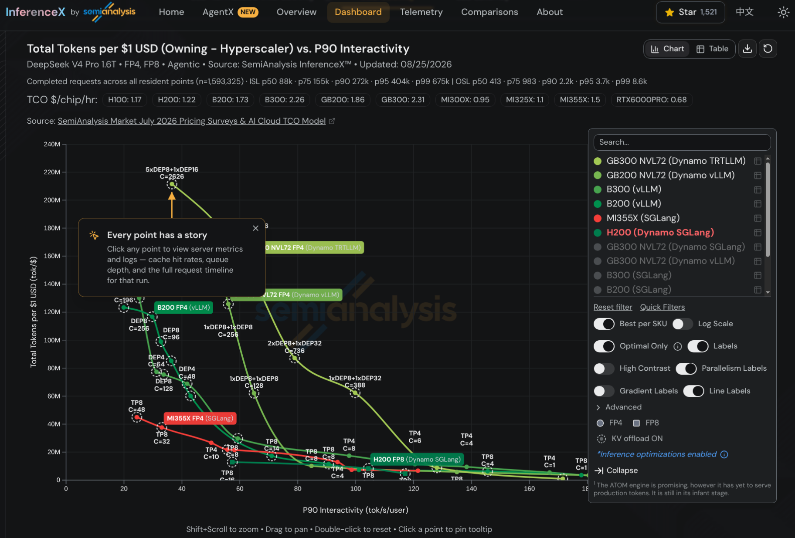
This is a tricky architectural and engineering challenge with a lot of tradeoffs, ideal EDU AI LAB material.
Here I share minimal setups distilled from the larger ones I use in enterprise workshops, to demonstrate the complexity of local AI inference engineering in practice and the role of caching.
Tokenomics - cost is more than just tokens. It spans hardware and power, pipeline complexity, observability (can you find and debug it?), reproducibility, and manageability. Every form of spend needs to be metered at the end.
CC (Contrast & Compare) - in AI there is always more than one way to do things. A controlled environment with enough complexity lets you pick and test approaches, finding the right fit across tradeoffs and levels of integration. The EDU AI LAB contrasts and compares three inference engines on the same small ~3B model: llama.cpp, vLLM, and SGLang.
Agentic Infrastructure - the AI evolution beyond IaaS: agents and harnesses are directly exposed to infrastructure through MCP servers and skills following dynamic rules (not fixed templates), turning infra access into governed, tool-based operations.
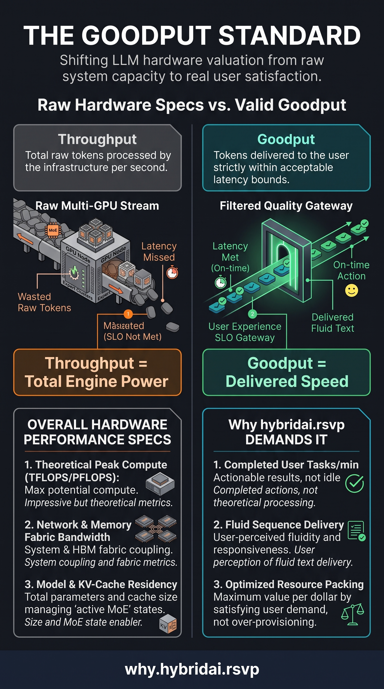
Goodput - the metric that actually matters. Raw throughput looks great on vendor slides, but it counts every token your GPUs burn - even the ones nobody wanted.
What counts is the tokens that actually serve users. That means time to first token (how long users wait before anything appears), tokens per second while streaming, and staying stable when agentic workloads hammer the system with unpredictable, multi-turn loops.
Optimize for goodput, and everything else - batching, caching, parallelism - falls into place.
Latency percentiles - the average hides the pain. Half your users may see decent response times, but the average says nothing about the rest.
P50, P90, P95 tell you how the slowest users are doing - and the tail is exactly what users feel and complain about. Tail latency is lost goodput: seconds wasted waiting are tokens never delivered.
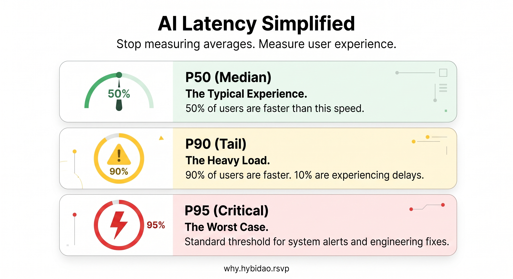
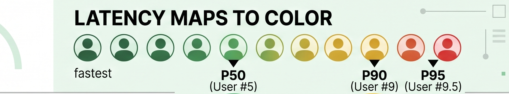
The AI serving trilemma - serving is a balancing act between speed, cost, and quality. Push one corner and another gives way: faster responses usually mean more GPUs, cheaper serving usually costs quality.
Every optimization trades one against another. Goodput is the score that tells you if the trade was worth it.
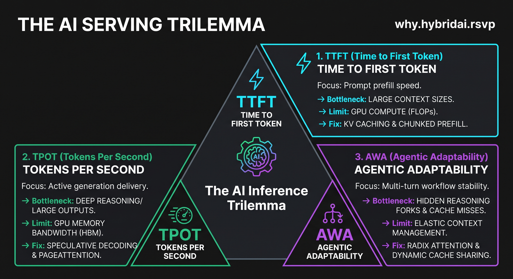
The AI deploying trilemma - before serving even starts, you have to decide where the model lives: your own GPUs, a cloud vendor, or something in between.
Each option shifts the speed, cost, and quality tradeoffs differently - and with high-end GPUs scarce in the EU, deployment choices lock in your goodput ceiling before a single token is served.
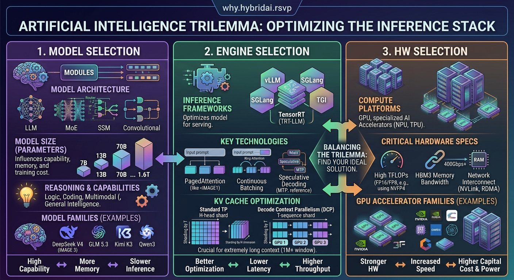
Model parallelism - one big model does not fit on one GPU, so it gets split across many. Tensor parallelism slices the weights so GPUs work on the same layer together, pipeline parallelism turns layers into an assembly line, and sequence parallelism splits a huge prompt.
Splitting well keeps every GPU busy - idle GPUs are pure waste, and good utilization means more goodput per GPU you pay for.
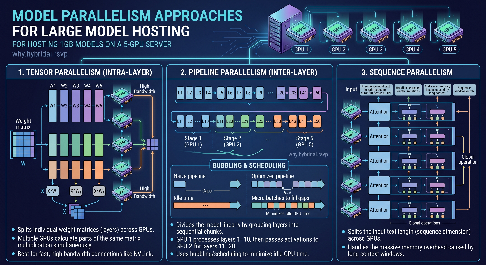
How it ... - Every ... LongContextPrice.jpeg
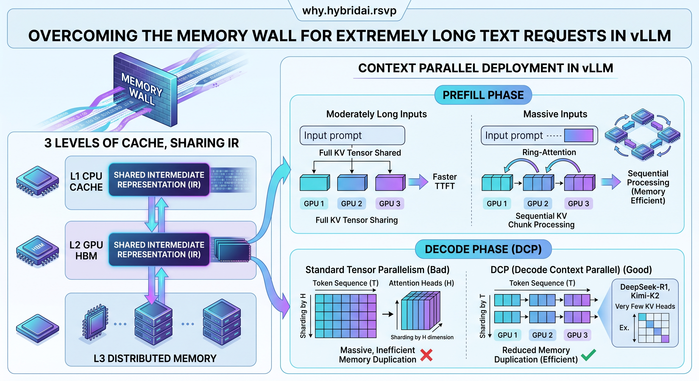
How it ... - Every ... pd-dissagregation.jpeg
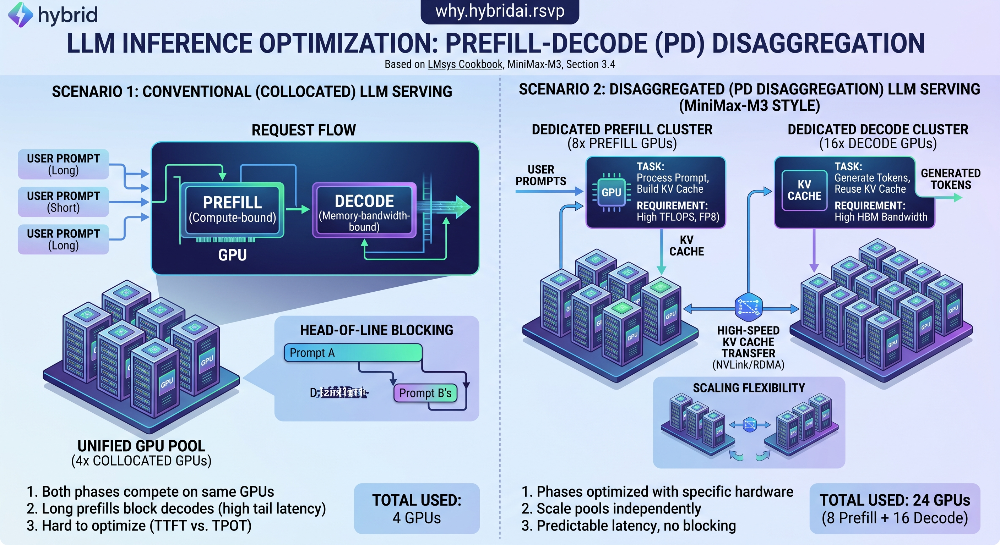
How it ... - Every ... MoE-paral.jpeg
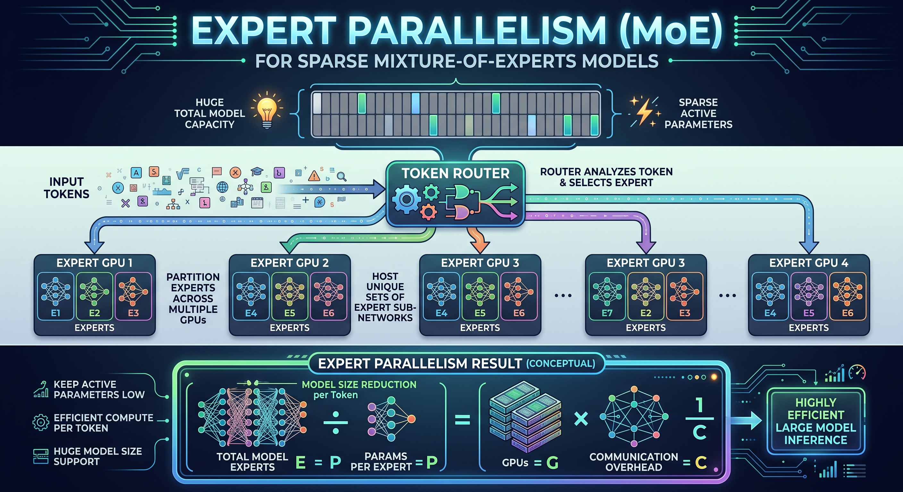
How it ... - Every ... MTP.jpeg
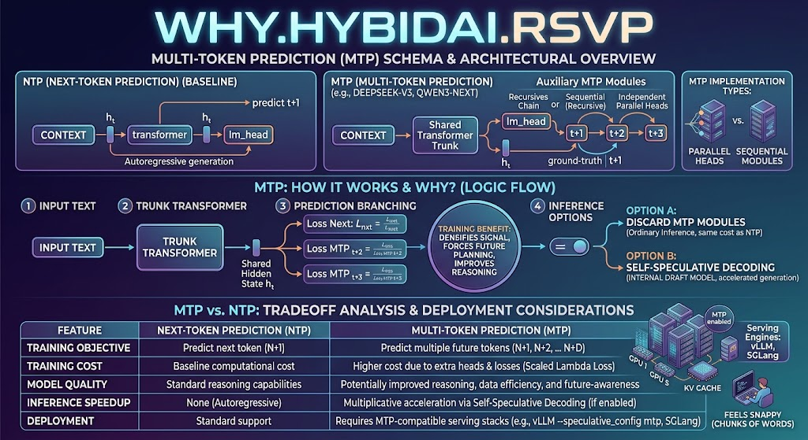
Mission - inference engineering is emerging as its own specialization. Just like you cannot learn programming by watching videos, you cannot learn this field from tutorials alone: you need infrastructure you can touch, feel, and explore, where tradeoffs and side effects show up for real. The EDU AI LAB is a single node, but it is Docker-container based — everything runs in containers on one machine — and it still carries enough complexity to demonstrate most inference-engineering principles from a systems-thinking perspective - turning reading into practice and letting you safely explore the tradeoffs of the field. You get the idea. Local AI is not CHEAP (GitHub Repository)
Local AI is not CHEAP project is leveraged in my related projects:
why.hybridai.rsvp - REALITY: 1 trillion sized model can easily cost you 1 million dollars a year!
howto.hybridai.click - Automating HybridAI on NeoCloud with Agentic Infra approach
howto.chimps.work - AI benchmarking in REAL production (executable book style)
howto.evals.work - AI evals in REAL production (executable book style)
my.pietra.dev - Custom AI harness for Interaction Engineers based on PI
my.taufiq.dev - Custom AI harness for Inference Engineers based on TAU
Deep dive materials about Inference Engineering - for self-study.
Inference Engineering - by Philip Kiely (Baseten). Now in its 3rd edition and free as a PDF.
A book for engineers who want to understand the technologies that power every AI company and application in the world.
Covers the inference stack end to end - GPU kernels and the memory wall, KV-cache and prefix caching, quantization, batching, and serving in production - the same tradeoffs the EDU AI LAB demonstrates live.
The Engineering Behind LLM Inference - From First Principles
Must-study before serving any AI model to really grasp the tradeoffs.
PY (@thecommitlog) has excellent deep-dive videos (with sources) which can help you better understand the tradeoffs in Inference Engineering - they are great companions to the book by Philip Kiely.
The Memory Wall: Examines the bandwidth bottleneck between high-speed compute cores and memory during prefill and autoregressive token generation.
Inside the GPU: Explores hardware-level architectural components-such as streaming multiprocessors, registers, and cache hierarchies-that power modern parallel execution.
Kernels and Memory: Covers low-level GPU kernel design and optimization strategies to minimize memory access overhead and maximize tensor arithmetic throughput.
Quantization: Details techniques for compressing model weights and activations into lower-bit precision (FP16, FP8, FP4) to reduce memory footprint while preserving accuracy.
Parallelism: Breaks down multi-GPU scaling methods, including tensor, pipeline, and data parallelism, required to partition models too large for a single device.
Mixture of Experts (MoE): Analyzes dynamic routing architectures that activate sparse parameter subsets per token to increase model capacity without proportional compute costs.
Speculative Decoding and Long Context: Focuses on draft-and-verify decoding algorithms alongside specialized attention mechanisms designed to accelerate generation and handle expansive context windows.
Serving in Production: Addresses end-to-end deployment engineering, dynamic request batching, KV-cache orchestration, and system reliability for low-latency production APIs.
The Whole Stack: as a wrapping bonus.
The Engineering Behind LLM Inference From First Principles - YouTube playlist:
Future of LLM Interference is diversity by specialization
How will your future interference stack will look?
The Entire AI Chip War Explained: The Entire AI Chip War Explained: Nvidia vs Everyone